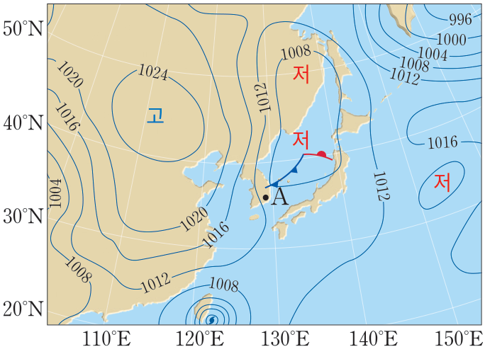
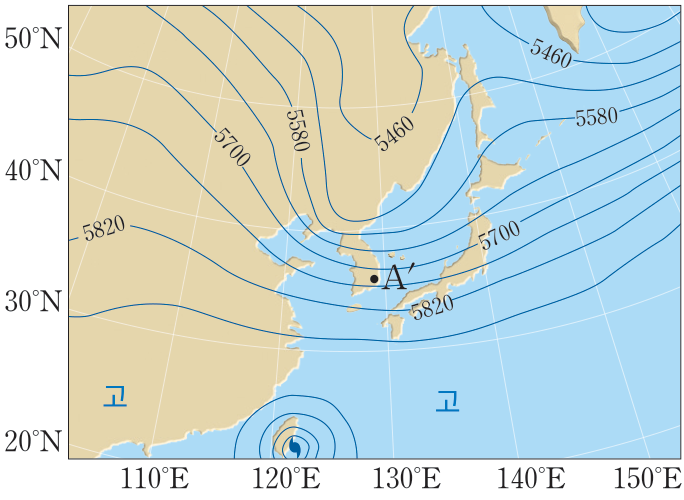

교과서 그림 III-25를 움직이는 그림으로 · 모식 그림 · 덩어리 윗면·아랫면의 기압 차이(진회색 화살표 길이 차이)는 과장
1정역학 평형
해 보기 — 대기의 연직 운동이 발생하는 까닭 알아보기
1A 지점과 B 지점의 공기에 작용하는 연직 기압 경도력과 중력의 크기를 각각 비교하고, 이를 바탕으로 하여 각 지점에서 연직 운동이 일어나는 까닭을 설명해 보자.
예시 답안고기압인 A 지점은 하강 기류가 나타나므로 중력이 연직 기압 경도력보다 크게 작용한다. 저기압인 B 지점은 상승 기류가 나타나므로 연직 기압 경도력이 중력보다 크게 작용한다. 이처럼 각 지점에서 연직 운동이 일어나는 까닭은 각 지점에 작용하는 연직 기압 경도력과 중력의 평형이 이루어지지 않기 때문이다.
2대기의 연직 운동이 활발하게 일어나는 기상 현상을 찾아 설명해 보자.
예시 답안구름이 생성되거나 태풍, 뇌우 등의 기상 현상은 연직 기압 경도력과 중력의 차이가 커져 대기의 연직 운동이 활발해지면서 일어난다.
교과서 101쪽 해 보기 · 예시 답안: 교과서(교사용) · 모식 그림 — 연직 운동 속도와 화살표 길이 차이는 과장
2대기를 움직이는 힘
기압 경도력
기압 경도력대기 중의 두 지점 사이에 기압 차1가 생기면 작용해 공기 덩어리를 이동시키는 힘
방향기압이 높은 곳에서 낮은 곳2으로 등압선의 수직3 방향으로 작용한다.
역할기압 경도력은 바람을 일으키는 근본적인 힘4이다.
단위 질량의 공기 덩어리에 작용하는 기압 경도력
P_H = F / M = ΔP×S / (ρ×S×ΔL) = (1/ρ)(ΔP/ΔL)
F 공기 덩어리에 작용하는 힘 M 공기의 질량 · ρ 공기의 밀도
교과서 102쪽 그림 III-26 · 두 힘의 길이 차이(ΔP)는 실제보다 크게 그림(모식)
2대기를 움직이는 힘
직접 해 보기 — 기압 경도력
기압 경도력1.7 × 10⁻³ N/kg
모식 그림 · 지표 부근 공기 밀도 1.2 kg/m³ · 전향력·마찰력은 아직 넣지 않음 · 움직임은 시간을 줄여 보임 · 회색 점: 같은 시간 간격의 위치
2대기를 움직이는 힘
전향력
전향력북반구에서 물체가 운동하는 방향의 오른쪽1 직각 방향으로 작용하고, 남반구에서 왼쪽2 직각 방향으로 작용한다.
크기공기 덩어리에 작용하는 전향력의 크기는 공기 덩어리의 속력3에 비례하고, 고위도4로 갈수록 커진다.
C = 2vΩ sin φ(Ω: 지구 자전 각속도)
모식 그림 · 그래프는 C = 2vΩ sin φ로 계산(Ω = 7.29 × 10−5 /s) · 원판의 회전 빠르기는 Ω sin φ에 비례(실제보다 빠르게)
2대기를 움직이는 힘
탐구 — 회전 원판을 이용한 전향 효과 실험하기
1회전 원판이 정지해 있을 때와 회전할 때, 회전 원판의 회전 방향이 다를 때, 회전 속도를 더 빠르게 했을 때 쇠구슬의 운동 경로 차이를 각각 비교하여 설명해 보자.
예시 답안회전 원판이 정지해 있을 때는 쇠구슬이 직선 경로로 운동한다. 회전 원판이 시계 반대 방향 또는 시계 방향으로 회전할 때는 쇠구슬이 회전 방향의 반대 방향으로 휘어지면서 운동한다. 회전 원판이 시계 반대 방향으로 더 빠르게 회전할 때는 쇠구슬이 더욱 많이 휘어지면서 운동한다.
2실험 결과를 바탕으로 하여 운동하는 물체에 작용하는 전향 효과를 설명해 보자.
예시 답안시계 반대 방향으로 자전하는 북반구에서는 물체가 운동하는 방향의 오른쪽으로 전향 효과가 작용한다. 반대로 시계 방향으로 자전하는 남반구에서는 물체가 운동하는 방향의 왼쪽으로 전향 효과가 작용한다. 자전 속도가 상대적으로 빠른 고위도 지역에서는 전향 효과가 더욱 크게 작용해 물체의 운동 방향이 더욱 많이 휘어지고, 자전 속도가 상대적으로 느린 저위도 지역에서는 전향 효과가 작게 작용해 물체의 운동 방향이 덜 휘어진다.
원판의 회전 방향은 지구 자전 방향에 해당하며, 원판의 회전 속도 차이는 지구의 위도에 따른 지구 자전 각속도의 연직 성분 차이(Ωsinφ)에 해당한다.
교과서 102·103쪽 · 모식 그림 · 빠르게 시계 반대는 원판이 1.7배 빠르게 돎(북위 60°와 30°의 sin φ 비) · 구슬은 원판 밖에서 보면 일정한 속력으로 곧게 굴러간다고 가정
2대기를 움직이는 힘
구심력
구심력원운동을 하는 물체의 궤적이 유지되도록 운동의 중심1 방향으로 물체가 운동하는 방향2을 지속적으로 바꾸는 힘
크기단위 질량의 물체에 작용하는 구심력의 크기는 v²r3이다.
바람등압선이 곡선일 때 부는 바람에도 이와 같은 원리의 구심력이 작용한다.
교과서 그림 III-27을 움직이는 그림으로 · 공은 등속 원운동 · 아래 두 칸의 구심력 화살표 길이는 v²/r로 계산 · 모식 그림
2대기를 움직이는 힘
마찰력
마찰력물체가 운동하는 방향과 반대1 방향으로 작용해 물체의 운동 속도를 감소시키는 힘
크기바람에 작용하는 마찰력은 풍속과 지표면의 거칠기2가 클수록 크게 작용한다.
대기층마찰력이 영향을 미치는 높이 약 1 km까지의 대기층을 대기 경계층3 또는 마찰층이라고 하고, 그 위의 대기층을 자유 대기4라고 한다.
교과서 그림 III-28 · 마찰력의 크기 비(1 : 2 : 3)와 높이별 풍속 곡선은 모식 · 흐름 줄은 그 높이의 풍속에 비례해 움직임
2대기를 움직이는 힘
스스로 확인하기 — 대기를 움직이는 힘
1정역학 평형 상태에서 대기의 연직 운동을 설명해 보자.
예시 답안정역학 평형 상태에서는 연직 기압 경도력과 중력의 크기가 같기 때문에 대기의 연직 운동 상태가 변하지 않는다.
2대기를 움직이는 힘인 기압 경도력, 전향력, 구심력, 마찰력을 설명해 보자.
예시 답안기압 경도력은 두 지점 사이의 기압 차에 의해 발생하는 힘으로, 기압이 높은 곳에서 낮은 곳으로 작용한다. 전향력은 지구 자전에 의해 발생하는 힘으로, 북(남)반구에서는 물체의 운동 방향의 오른쪽(왼쪽) 직각 방향으로 작용한다. 구심력은 원운동을 하는 물체의 궤적이 유지되도록 물체의 운동 방향을 바꾸는 힘으로, 운동의 중심 방향으로 작용한다. 마찰력은 물체의 운동 속도를 감소시키는 힘으로, 물체의 운동 방향과 반대 방향으로 작용한다.
3| 창의력 더하기 |기압 경도력이 일정할 때 적도 해양에서 고위도 육지로 갈수록 바람의 방향과 속력이 어떻게 달라지는지 대기를 움직이는 힘과 관련지어 설명해 보자.
예시 답안기압 경도력이 일정할 때 적도 해양에서 고위도 육지로 갈수록 전향력이 크게 작용하므로 북반구에서는 풍향이 공기 이동 방향의 오른쪽으로, 남반구에서는 왼쪽으로 바뀔 것이다. 마찰력은 해양보다 육지에서 더 크게 작용하므로 적도 해양에서 고위도 육지로 갈수록 풍속이 줄어들 것이다.
교과서 103쪽 스스로 확인하기 · 예시 답안: 교과서(교사용)
3상층의 바람
여러 가지 바람
등압선이 직선일 때
등압선이 원형이거나 곡선일 때
상층에서 부는 바람높이 약 1 km 이상
지상에서 부는 바람높이 약 1 km까지
지균풍
작용하는 힘
기압 경도력전향력
경도풍
작용하는 힘
기압 경도력전향력구심력
지상풍
작용하는 힘
기압 경도력전향력마찰력
지상풍
작용하는 힘
기압 경도력전향력마찰력구심력
모식 그림 · 북반구 · 지상풍의 경각은 30°로 그림
3상층의 바람
구름과 깃발은 왜 다른 쪽으로 움직일까?
높은 하늘에 있는 구름이 움직이는 방향과 지상과 가까운 곳에 있는 깃발이 날리는 방향이 서로 다를 때가 있다. 이러한 현상이 나타나는 까닭은 무엇일까?
예시 답안구름이나 깃발은 바람에 의해 움직인다. 구름과 깃발의 운동 방향이 서로 다른 것은 높이 떠 있는 구름 주변과 지상과 가까운 깃발 주변에서 부는 바람의 방향이 다르기 때문이다.
교과서 104쪽 · 모식 그림 — 구름의 높이, 깃대와 깃발의 크기는 실제 비율과 다름
3상층의 바람
지균풍
상층지표면으로부터 높이 약 1 km1 이상의 상층 대기는 지표면의 영향을 거의 받지 않아 마찰력2이 무시할 수 있을 정도로 작다.
형성 과정공기가 움직이면 북반구에서는 전향력이 운동 방향의 오른쪽3 직각 방향으로 작용하므로 풍향이 오른쪽으로 휘어진다.
지균풍기압 경도력과 전향력이 평형4을 이루어 등압선에 나란하게5 부는 바람
교과서 그림 III-29 · 북반구, 위에서 본 모식 그림 · 실제로는 등압선 둘레를 출렁이다가 나란해짐(그림은 교과서처럼 단순화)
3상층의 바람
지균풍의 풍속
v = 1 ÷ (2 × 1.0 × 7.29×10⁻⁵ × sin 35°)× 400 Pa ÷ 300 000 m ≈ 16 m/s
지균풍에서 기압 경도력과 전향력은 크기가 같고 방향은 반대로 작용한다.
(1/ρ)(ΔP/ΔL) = 2vΩ sin φ→v = 1/(2ρΩ sin φ) · ΔP/ΔL
(ρ: 공기의 밀도, Ω: 지구 자전 각속도, φ: 위도)
지균풍의 풍속은 위도가 같을 때 기압 경도력이 클수록1 빠르고, 기압 경도력의 크기가 같을 때 위도가 낮을수록2 빠르다.
지균풍의 풍속16 m/s
모식 그림 · 공기 밀도 1.0 kg/m³(약 850 hPa 높이), ΔP = 4 hPa로 계산 · 화살표 길이는 힘·풍속에 비례
3상층의 바람
경도풍
저기압전향력 = 기압 경도력 − 구심력
고기압전향력 = 기압 경도력 + 구심력
경도풍상층에서 등압선이 원형이거나 곡선일 때 기압 경도력, 전향력, 구심력1이 균형을 이루며 부는 바람
풍향북반구에서 경도풍은 중심부가 저기압일 때 시계 반대2 방향, 고기압일 때 시계3 방향으로 분다.
풍속기압 경도력이 일정할 때 고기압 부근의 경도풍은 저기압 부근의 경도풍보다 풍속이 빠르다4.
교과서 그림 III-30 · 북반구, 위에서 본 모식 그림 · 구심력을 기압 경도력의 약 1/3로 키워 그림(실제로는 1/10 남짓) · 두 칸의 반지름은 같게 그림
3상층의 바람
경도풍의 풍속
C = 2vΩ sin φ
(v: 풍속, Ω: 지구 자전 각속도, φ: 위도)
같은 위도에서는 전향력의 크기가 풍속에 비례한다.
풍속은 전향력1의 크기에 비례하므로 기압 경도력이 같을 때 고기압성 경도풍은 저기압성 경도풍보다 전향력이 크게2 작용한다. 따라서 풍속의 크기는 고기압성 경도풍 > 지균풍 > 저기압성 경도풍3 순서로 나타난다.
모식 그림 · 같은 위도, 같은 기압 차와 등압선 간격에서 비교 · 구심력을 기압 경도력의 약 1/3로 키워 그림(앞 장과 같은 비율) · 바람 화살표 길이는 풍속에 비례
4지상의 바람
지상풍
지상지표면으로부터 높이 약 1 km1까지의 지상에서는 지표면의 마찰2이 바람에 영향을 준다.
힘의 평형마찰력과 전향력의 합력3이 기압 경도력과 평형을 이루며 바람이 등압선을 비스듬하게4 가로질러 분다.
경각지상풍이 등압선과 이루는 각(θ) 마찰력이 크게 작용할수록 커진다5.
모식 그림 · 경각 30°로 계산(마찰력 = 마찰 계수 × 풍속)
4지상의 바람
직접 해 보기 — 마찰력과 경각
지표면
경각30°
풍속13.0 m/s
모식 그림 · 마찰력 = 마찰 계수 × 풍속, 마찰 계수는 높이 1 km에서 0이 되게 줄임 · 지균풍 풍속 15 m/s로 계산
4지상의 바람
지상풍 — 등압선이 원형일 때
원형 등압선상층에서는 바람이 등압선에 나란하게 불지만 지표 부근에서는 마찰력이 작용해 풍속을 감소시키므로 바람이 등압선을 가로지르며 분다.
풍향지상의 저기압 부근에서는 바람이 시계 반대1 방향으로 불어 들어가고2, 고기압 부근에서는 바람이 시계3 방향으로 불어 나간다4.
모식 그림 · 경각 30°로 그림
5일기도
지상 일기도와 상층 일기도
지상 일기도기압이 같은 지점을 연결한 등압선1으로 기압의 분포를 나타낸다.
상층 일기도특정 기압에서 등압면의 고도2가 같은 지점을 연결한 등고선으로 기압의 분포를 나타낸다.
기압상층 일기도에서 등압면의 고도가 높은 지역은 고도가 낮은 지역보다 기압이 높다3. 같은 높이(500 hPa 등압면의 평균 높이)에서 비교하면, A 지점은 등압면이 위에 있어 위로 더 올라가야 500 hPa이 되므로 기압이 500 hPa보다 높고, B 지점은 등압면이 아래에 있어 기압이 500 hPa보다 낮다.
기압 경도력등고선이 높은 쪽에서 낮은 쪽4으로기압 경도력이 작용한다.
교과서 그림 III-33 · 모식 그림 · 등압면 기울기는 크게 과장(실제로는 수천 km에 걸쳐 수백 m 차이)
5일기도
해 보기 — 지상 일기도와 상층 일기도 비교하기


지상 일기도(단위: hPa)
상층 500 hPa 등압면 일기도(단위: m)
그림은 같은 날 같은 시각의 지상 일기도와 상층 500 hPa 등압면 일기도를 나타낸 것이다.
1.지상 일기도의 A 지점과 상층 일기도의 A′ 지점에서 기압 경도력이 작용하는 방향을 각각 화살표로 나타내 보자.
2.지상 일기도의 A 지점과 상층 일기도의 A′ 지점에서 기압 경도력이 작용하는 방향과 풍향은 어떤 차이가 있는지 비교해 보고, 차이가 나는 까닭을 설명해 보자.
교과서 107쪽 해 보기 · 일기도: 교과서 그림
5일기도
해 보기 — 지상 일기도의 A 지점
지상 일기도 확대(단위: hPa)
기압 경도력기압이 높은 곳에서 낮은 곳으로 등압선에 수직 방향으로 작용한다.
마찰력마찰력은 바람이 불어 가는 방향의 반대 방향으로 작용하므로 지표 부근에서는 풍속이 감소하면서 전향력의 크기도 작아진다.
지상풍마찰력과 전향력의 합력이 기압 경도력과 평형을 이루며 바람이 등압선을 비스듬하게 가로질러 분다.
교과서 107쪽 지상 일기도 일부를 확대 · 화살표 길이는 모식(기압 경도력과 같은 길이를 기준으로 계산), 경각 30°로 그림
5일기도
해 보기 — 상층 일기도의 A′ 지점
상층 500 hPa 등압면 일기도 확대(단위: m)
상층 일기도등고선이 높은 쪽에서 낮은 쪽으로 기압 경도력이 작용한다.
지균풍기압 경도력과 전향력이 평형을 이루어 등압선에 나란하게 부는 바람
마찰력지표면으로부터 높이 약 1 km 이상의 상층 대기는 지표면의 영향을 거의 받지 않아 마찰력이 무시할 수 있을 정도로 작다.
교과서 107쪽 상층 일기도 일부를 확대 · 화살표 길이는 모식(기압 경도력과 같은 길이를 기준으로 계산)
5일기도
해 보기 — 문제 1·2 해설
지상 일기도(단위: hPa)
상층 500 hPa 등압면 일기도(단위: m)
1.지상 일기도의 A 지점과 상층 일기도의 A′ 지점에서 기압 경도력이 작용하는 방향을 각각 화살표로 나타내 보자.
2.지상 일기도의 A 지점과 상층 일기도의 A′ 지점에서 기압 경도력이 작용하는 방향과 풍향은 어떤 차이가 있는지 비교해 보고, 차이가 나는 까닭을 설명해 보자.
예시 답안 1기압 경도력은 기압이 높은 곳에서 낮은 곳으로 등압선에 수직 방향으로 작용한다. 따라서 지상 일기도의 A 지점에서 기압 경도력은 북동쪽으로 작용하고, 상층 일기도의 A′ 지점에서 기압 경도력은 거의 북쪽으로 작용한다.
예시 답안 2A 지점에서 바람은 기압 경도력이 작용하는 방향의 오른쪽 방향으로 등압선을 비스듬하게 가로질러 불고, A′ 지점에서 바람은 기압 경도력이 작용하는 방향의 오른쪽 직각 방향으로 등압선에 나란하게 분다. 이러한 차이가 나는 까닭은 A 지점에서 부는 바람에는 마찰력이 작용하지만 A′ 지점에서 부는 바람에는 마찰력이 작용하지 않기 때문이다.
교과서 107쪽 해 보기 · 일기도: 교과서 그림 · 빨강 기압 경도력, 청록 바람 · 화살표 방향과 길이 비율은 앞의 두 장과 같음(모식)